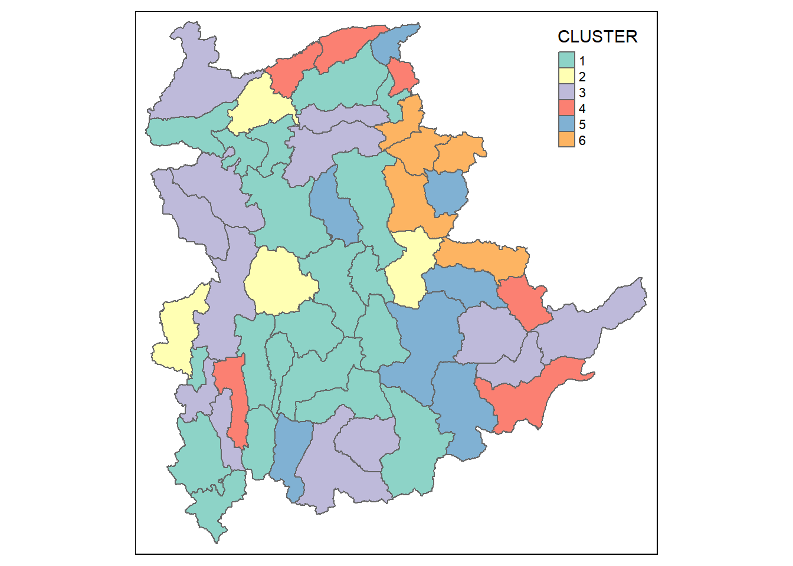

pacman::p_load(sp, spdep, tmap, sf, ClustGeo,
ggpubr, cluster, factoextra, NbClust,
heatmaply, corrplot, psych, tidyverse, GGally)In-Class Exercise 7
Importing Data
shan_sf <- st_read(dsn = "data/geospatial",
layer = "myanmar_township_boundaries") %>%
filter(ST %in% c("Shan (East)", "Shan (North)", "Shan (South)")) %>%
select(c(2:7))Reading layer `myanmar_township_boundaries' from data source
`C:\jaymieseet\IS415-GAA-JS\In-class_Ex\In-class_Ex07\data\geospatial'
using driver `ESRI Shapefile'
Simple feature collection with 330 features and 14 fields
Geometry type: MULTIPOLYGON
Dimension: XY
Bounding box: xmin: 92.17275 ymin: 9.671252 xmax: 101.1699 ymax: 28.54554
Geodetic CRS: WGS 84This shapefile covers the entire Myanmar, so we need to filter out only the Shan region
Check that it is in a sj object class
shan_sfSimple feature collection with 55 features and 6 fields
Geometry type: MULTIPOLYGON
Dimension: XY
Bounding box: xmin: 96.15107 ymin: 19.29932 xmax: 101.1699 ymax: 24.15907
Geodetic CRS: WGS 84
First 10 features:
ST ST_PCODE DT DT_PCODE TS TS_PCODE
1 Shan (North) MMR015 Mongmit MMR015D008 Mongmit MMR015017
2 Shan (South) MMR014 Taunggyi MMR014D001 Pindaya MMR014006
3 Shan (South) MMR014 Taunggyi MMR014D001 Ywangan MMR014007
4 Shan (South) MMR014 Taunggyi MMR014D001 Pinlaung MMR014009
5 Shan (North) MMR015 Mongmit MMR015D008 Mabein MMR015018
6 Shan (South) MMR014 Taunggyi MMR014D001 Kalaw MMR014005
7 Shan (South) MMR014 Taunggyi MMR014D001 Pekon MMR014010
8 Shan (South) MMR014 Taunggyi MMR014D001 Lawksawk MMR014008
9 Shan (North) MMR015 Kyaukme MMR015D003 Nawnghkio MMR015013
10 Shan (North) MMR015 Kyaukme MMR015D003 Kyaukme MMR015012
geometry
1 MULTIPOLYGON (((96.96001 23...
2 MULTIPOLYGON (((96.7731 21....
3 MULTIPOLYGON (((96.78483 21...
4 MULTIPOLYGON (((96.49518 20...
5 MULTIPOLYGON (((96.66306 24...
6 MULTIPOLYGON (((96.49518 20...
7 MULTIPOLYGON (((97.14738 19...
8 MULTIPOLYGON (((96.94981 22...
9 MULTIPOLYGON (((96.75648 22...
10 MULTIPOLYGON (((96.95498 22...ict <- read_csv ("data/aspatial/Shan-ICT.csv")Shan region comprises of many subregions and districts (which we can observe if we inspect the full data). There are several variables as well, eg, total households.
Data Preparation
ict_derived <- ict %>%
mutate(`RADIO_PR` = `Radio`/`Total households`*1000) %>%
mutate(`TV_PR` = `Television`/`Total households`*1000) %>%
mutate(`LLPHONE_PR` = `Land line phone`/`Total households`*1000) %>%
mutate(`MPHONE_PR` = `Mobile phone`/`Total households`*1000) %>%
mutate(`COMPUTER_PR` = `Computer`/`Total households`*1000) %>%
mutate(`INTERNET_PR` = `Internet at home`/`Total households`*1000) %>%
rename(`DT_PCODE` =`District Pcode`,`DT`=`District Name`,
`TS_PCODE`=`Township Pcode`, `TS`=`Township Name`,
`TT_HOUSEHOLDS`=`Total households`,
`RADIO`=`Radio`, `TV`=`Television`,
`LLPHONE`=`Land line phone`, `MPHONE`=`Mobile phone`,
`COMPUTER`=`Computer`, `INTERNET`=`Internet at home`) We have to standardize the values (divide by total household and scale it up) to derive the ownership. Then, we rename it to make the field name more concise and easier to recognise.
We can create all the plots to plot the distribution of the newly derived variables. The code chunk below allows you to plot out all the variables in one view.
radio <- ggplot(data=ict_derived,
aes(x= `RADIO_PR`)) +
geom_histogram(bins=20,
color="black",
fill="light blue")
tv <- ggplot(data=ict_derived,
aes(x= `TV_PR`)) +
geom_histogram(bins=20,
color="black",
fill="light blue")
llphone <- ggplot(data=ict_derived,
aes(x= `LLPHONE_PR`)) +
geom_histogram(bins=20,
color="black",
fill="light blue")
mphone <- ggplot(data=ict_derived,
aes(x= `MPHONE_PR`)) +
geom_histogram(bins=20,
color="black",
fill="light blue")
computer <- ggplot(data=ict_derived,
aes(x= `COMPUTER_PR`)) +
geom_histogram(bins=20,
color="black",
fill="light blue")
internet <- ggplot(data=ict_derived,
aes(x= `INTERNET_PR`)) +
geom_histogram(bins=20,
color="black",
fill="light blue")Left join the 2 dataframes with the unique identifier used to join both data objects is TS_PCODE. When we append all the ICT variables over, the first data file should be the geometry sf file, the second one will be the attribute data file. ‘by’ parameter defines the unique identifier, which is not necessary here since the unique identifier field has the same name, but it is good practice to define it.
If both files are a spatial file, we should use st_join() instead. Left join allows the use the sf for only one file.
shan_sf <- left_join(shan_sf,
ict_derived, by=c("TS_PCODE"="TS_PCODE"))
write_rds(shan_sf, "data/rds/shan_sf.rds")Correlation Analysis
cluster_vars.cor = cor(ict_derived[,12:17])
corrplot.mixed(cluster_vars.cor,
lower = "ellipse",
upper = "number",
tl.pos = "lt",
diag = "l",
tl.col = "black")Hierarchy Cluster Analysis
cluster_vars <- shan_sf %>%
st_set_geometry(NULL) %>%
select("TS.x", "RADIO_PR", "TV_PR", "LLPHONE_PR", "MPHONE_PR", "COMPUTER_PR")
head(cluster_vars,10) TS.x RADIO_PR TV_PR LLPHONE_PR MPHONE_PR COMPUTER_PR
1 Mongmit 286.1852 554.1313 35.30618 260.6944 12.15939
2 Pindaya 417.4647 505.1300 19.83584 162.3917 12.88190
3 Ywangan 484.5215 260.5734 11.93591 120.2856 4.41465
4 Pinlaung 231.6499 541.7189 28.54454 249.4903 13.76255
5 Mabein 449.4903 708.6423 72.75255 392.6089 16.45042
6 Kalaw 280.7624 611.6204 42.06478 408.7951 29.63160
7 Pekon 318.6118 535.8494 39.83270 214.8476 18.97032
8 Lawksawk 387.1017 630.0035 31.51366 320.5686 21.76677
9 Nawnghkio 349.3359 547.9456 38.44960 323.0201 15.76465
10 Kyaukme 210.9548 601.1773 39.58267 372.4930 30.94709Extracting clustering variables
shan_ict <- select(cluster_vars, c(2:6))
head(shan_ict, 10) RADIO_PR TV_PR LLPHONE_PR MPHONE_PR COMPUTER_PR
1 286.1852 554.1313 35.30618 260.6944 12.15939
2 417.4647 505.1300 19.83584 162.3917 12.88190
3 484.5215 260.5734 11.93591 120.2856 4.41465
4 231.6499 541.7189 28.54454 249.4903 13.76255
5 449.4903 708.6423 72.75255 392.6089 16.45042
6 280.7624 611.6204 42.06478 408.7951 29.63160
7 318.6118 535.8494 39.83270 214.8476 18.97032
8 387.1017 630.0035 31.51366 320.5686 21.76677
9 349.3359 547.9456 38.44960 323.0201 15.76465
10 210.9548 601.1773 39.58267 372.4930 30.94709Data Standardisation
shan_ict.std <- normalize(shan_ict)
summary(shan_ict.std) RADIO_PR TV_PR LLPHONE_PR MPHONE_PR
Min. :0.0000 Min. :0.0000 Min. :0.0000 Min. :0.0000
1st Qu.:0.2544 1st Qu.:0.4600 1st Qu.:0.1123 1st Qu.:0.2199
Median :0.4097 Median :0.5523 Median :0.1948 Median :0.3846
Mean :0.4199 Mean :0.5416 Mean :0.2703 Mean :0.3972
3rd Qu.:0.5330 3rd Qu.:0.6750 3rd Qu.:0.3746 3rd Qu.:0.5608
Max. :1.0000 Max. :1.0000 Max. :1.0000 Max. :1.0000
COMPUTER_PR
Min. :0.00000
1st Qu.:0.09598
Median :0.17607
Mean :0.23692
3rd Qu.:0.29868
Max. :1.00000 shan_ict.z <- scale(shan_ict)
describe(shan_ict.z) vars n mean sd median trimmed mad min max range skew kurtosis
RADIO_PR 1 55 0 1 -0.04 -0.06 0.94 -1.85 2.55 4.40 0.48 -0.27
TV_PR 2 55 0 1 0.05 0.04 0.78 -2.47 2.09 4.56 -0.38 -0.23
LLPHONE_PR 3 55 0 1 -0.33 -0.15 0.68 -1.19 3.20 4.39 1.37 1.49
MPHONE_PR 4 55 0 1 -0.05 -0.06 1.01 -1.58 2.40 3.98 0.48 -0.34
COMPUTER_PR 5 55 0 1 -0.26 -0.18 0.64 -1.03 3.31 4.34 1.80 2.96
se
RADIO_PR 0.13
TV_PR 0.13
LLPHONE_PR 0.13
MPHONE_PR 0.13
COMPUTER_PR 0.13The Z-score always equal to 1.
Visualising the standardised clustering variables
Plot the graph to see the how the use of the different standardization affects.
r <- ggplot(data=ict_derived,
aes(x= `RADIO_PR`)) +
geom_histogram(bins=20,
color="black",
fill="light blue") +
ggtitle("Raw values without standardisation")
shan_ict_s_df <- as.data.frame(shan_ict.std)
s <- ggplot(data=shan_ict_s_df,
aes(x=`RADIO_PR`)) +
geom_histogram(bins=20,
color="black",
fill="light blue") +
ggtitle("Min-Max Standardisation")
shan_ict_z_df <- as.data.frame(shan_ict.z)
z <- ggplot(data=shan_ict_z_df,
aes(x=`RADIO_PR`)) +
geom_histogram(bins=20,
color="black",
fill="light blue") +
ggtitle("Z-score Standardisation")
ggarrange(r, s, z,
ncol = 3,
nrow = 1)r <- ggplot(data=ict_derived,
aes(x= `RADIO_PR`)) +
geom_density(color="black",
fill="light blue") +
ggtitle("Raw values without standardisation")
shan_ict_s_df <- as.data.frame(shan_ict.std)
s <- ggplot(data=shan_ict_s_df,
aes(x=`RADIO_PR`)) +
geom_density(color="black",
fill="light blue") +
ggtitle("Min-Max Standardisation")
shan_ict_z_df <- as.data.frame(shan_ict.z)
z <- ggplot(data=shan_ict_z_df,
aes(x=`RADIO_PR`)) +
geom_density(color="black",
fill="light blue") +
ggtitle("Z-score Standardisation")
ggarrange(r, s, z,
ncol = 3,
nrow = 1)proxmat <- dist(shan_ict, method = 'euclidean')Using the distance metrics.
hclust_ward <- hclust(proxmat, method = 'ward.D')We can extract the clustering results and plot it into a dendrogram.
plot(hclust_ward, cex = 0.6)For example, if we put the cut-off at 200, we will have 2 clusters. To determine the cut-off, we should calculate the definite value.
We can do multiple calculations to see which one gives us the best results.
m <- c( "average", "single", "complete", "ward")
names(m) <- c( "average", "single", "complete", "ward")
ac <- function(x) {
agnes(shan_ict, method = x)$ac
}
map_dbl(m, ac) average single complete ward
0.8131144 0.6628705 0.8950702 0.9427730 set.seed(12345)
gap_stat <- clusGap(shan_ict,
FUN = hcut,
nstart = 25,
K.max = 10,
B = 50)
# Print the result
print(gap_stat, method = "firstmax")Clustering Gap statistic ["clusGap"] from call:
clusGap(x = shan_ict, FUNcluster = hcut, K.max = 10, B = 50, nstart = 25)
B=50 simulated reference sets, k = 1..10; spaceH0="scaledPCA"
--> Number of clusters (method 'firstmax'): 1
logW E.logW gap SE.sim
[1,] 8.407129 8.680794 0.2736651 0.04460994
[2,] 8.130029 8.350712 0.2206824 0.03880130
[3,] 7.992265 8.202550 0.2102844 0.03362652
[4,] 7.862224 8.080655 0.2184311 0.03784781
[5,] 7.756461 7.978022 0.2215615 0.03897071
[6,] 7.665594 7.887777 0.2221833 0.03973087
[7,] 7.590919 7.806333 0.2154145 0.04054939
[8,] 7.526680 7.731619 0.2049390 0.04198644
[9,] 7.458024 7.660795 0.2027705 0.04421874
[10,] 7.377412 7.593858 0.2164465 0.04540947fviz_gap_stat(gap_stat)
From her we can see that the closest optimisation difference is 5 and 6. 6 is slightly higher so we should choose 6.
Use rect.hclust() to clearly show the clusters so we can also see which cluster has the most amount of members.
plot(hclust_ward, cex = 0.6)
rect.hclust(hclust_ward,
k = 6,
border = 2:5)Use as.factor() to convert it into a factor data type and arranged in a ordinal scale.
groups <- as.factor(cutree(hclust_ward, k=6))Use cbind() to append the 2 dataframes instead of left_join() because there are no unique identifers. However, if we perform any form of sorting, the sequence change and we cannot use cbind().
shan_sf_cluster <- cbind(shan_sf, as.matrix(groups)) %>%
rename(`CLUSTER`=`as.matrix.groups.`)qtm(shan_sf_cluster, "CLUSTER")
Since it is in the class factor, the numbers are all treated as individual classes. If it was in the numeric class, it would become a range.
Previously, poly2nb() only worked with sp objects, but the latest version does not require us to convert it to sp and we can just use the sf class.
shan.nb <- poly2nb(shan_sf)
summary(shan.nb)Neighbour list object:
Number of regions: 55
Number of nonzero links: 264
Percentage nonzero weights: 8.727273
Average number of links: 4.8
Link number distribution:
2 3 4 5 6 7 8 9
5 9 7 21 4 3 5 1
5 least connected regions:
3 5 7 9 47 with 2 links
1 most connected region:
8 with 9 linksSince it is an sf object, we can use the plot() function to show the map.
plot(st_geometry(shan_sf), border=grey(.5))
pts <- st_coordinates(st_centroid(shan_sf))
plot(shan.nb,
pts,
col="blue",
add=TRUE)